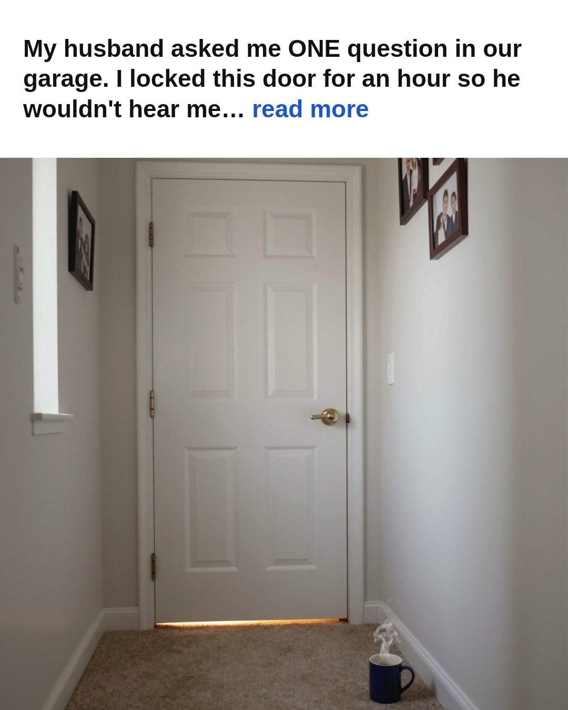
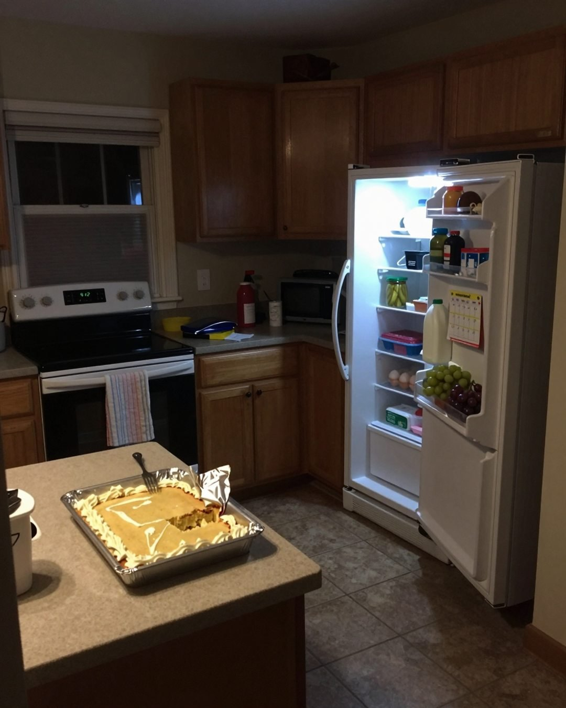

v5 · 26 Nov: 8 creatives designed by Fable 5.2 with the native-ad skill, rendered on the 5090. Only #1 shows a scale (Linda holding it, 195.0); the other 7 are story moments. Each ad text is a chapter of the story, cut at its cliffhanger, and every ad image reappears in the story at the moment it leads into. Brand never named. Ad texts carry no telehealth words, so each runs to either story.
N2 (loved one at the low point; layout from ref 48, warmth of ref 44) · A likeable, ordinary mom caught holding the hidden scale with 195.0 lit, looking straight at you with a rueful half-smile: the viewer's own face in the husband's phone.
2W
Second Wind DiariesSponsored
My husband found the scale I hid three years ago. 👆 That's me, about ninety seconds later.
SECONDWINDHe found the scale I hid for 3 years
Learn more
Primary text
My husband found the scale I hid three years ago. 👆 That's me, about ninety seconds later.
Saturday, August 23. 7:40 in the morning.
It was on the top shelf of our garage, pushed behind the deck stain, wrapped in a blue-striped beach towel like something I'd buried.
"You told me the batteries were dead," Mark said.
They weren't. I told him that three years ago, and he believed me, because why wouldn't he.
Mark doesn't shout. Twenty-six years, he never has. He set it down on the concrete between us and pressed it with his toe. The little screen lit up.
I could have walked back into the house. He would have let me.
I stepped on it.
195.0
I hadn't seen that number in three years. I picked the thing up with both hands, like I could still hide it, and the number just sat there. Lit.
Here's what I can't get past. Mark never looked at it. Not once. He looked at my face. And then he asked me one question, so quietly I almost didn't hear it.
I couldn't answer him. I locked myself in the bathroom and ran the faucet so he wouldn't hear me.
I can answer him now. But his question only makes sense once you know what else was wrapped in that towel 👇
Why it clicks: She is not crying and not a 'before' body: she is the woman from book club who just got found out, and every woman who has ever said 'the batteries are dead' knows that exact look. Identification first, the number second. The eye contact makes the viewer the husband, so the question in the copy lands on her. Lands on: Top of the story (Saturday, August 23 · 7:40 a.m.) — the ad is the opening chapter and the hero is the page's first image; the reader continues at 'What was in the towel'. Headline: He found the scale I hid for 3 years CTA button: Learn more Destination:/story/ (LS) or /story-nols/ (No-LS). Same text works for both: it has no telehealth words.
Ad 2 · only photo of me shadow
N5 (photo + red marker circle; layout idea from ref 14) on an N4 family snapshot · A happy graduation photo with a red marker circle around the photographer's shadow and the scrawled word 'me': the viewer has to look twice, then gets it in the gut.
2W
Second Wind DiariesSponsored
This is the only picture of me from my daughter's graduation. 👆
SECONDWINDThe only photo of me that day
Learn more
Primary text
This is the only picture of me from my daughter's graduation. 👆
Look at the walkway. The shadow holding the phone. That's me.
"Let me take it!"
I must have said that four hundred times in three years. Nobody argues with the mom who offers to take the picture. They just hand over the phone and squeeze in.
Three Christmases. Our 25th anniversary dinner. The graduation. Scroll through every phone in my family and I'm in almost none of it. A shadow here. An elbow there. Once, a reflection in the oven door.
It started the night of my niece's wedding, with one photo from Table 9 and a comment that was deleted before breakfast.
After that I became the one who holds the phone. Not dramatically. Quietly. I was good at it.
I was sure nobody had noticed.
Then one Saturday in August my husband found something I'd hidden on the top shelf of our garage. And he asked me a question that proved he had noticed every single time 👇
Why it clicks: Every mom 45-62 is the family photographer and knows exactly why. 'Let me take it!' is the most recognised hiding move in this audience and nobody has put it in an ad. It reads as a family post, not a weight ad, so it gets the stop without any diet-ad blindness. Lands on: 'The pictures I'm not in' — and pays off at 'The question' ("Is this why you won't let me take your picture anymore?"). Headline: The only photo of me that day CTA button: Learn more Destination:/story/ (LS) or /story-nols/ (No-LS). Same text works for both: it has no telehealth words.
Ad 3 · lockscreen 114am is that linda
D10 (notification stack / lock screen), HTML · A phone lock screen at 1:14 a.m. with one comment preview: "wait is that Linda?? 😮" — five seconds of pure social dread, readable at thumb speed.
2W
Second Wind DiariesSponsored
1:14 a.m. My phone buzzed on the nightstand. 👆 Four words and two question marks.
SECONDWINDFour words at 1:14 a.m.
Learn more
Primary text
1:14 a.m. My phone buzzed on the nightstand. 👆 Four words and two question marks.
It was the night of my niece Kayla's wedding. Somebody's cousin had posted 32 photos. I was tagged in one. Table 9, taken from the side, while I was laughing at the best man's speech.
And under it, from my own sister-in-law:
"wait is that Linda??"
She deleted it before breakfast.
I had already read it forty times.
I untagged myself. Then I zoomed in, the way you keep pressing on a bruise. I did not recognize the woman at Table 9. She was wearing my dress.
Mark slept through the whole thing, eighteen inches away.
The next morning I printed that photo. I folded it in four. I wrapped it in a beach towel with our bathroom scale, carried both out to the garage and put them on the top shelf, behind the deck stain.
I told my husband the batteries were dead.
That was three years ago.
Last August, he found the towel 👇
Why it clicks: The fear is not the scale, it is being seen by family. Every woman in this audience has opened a tagged photo with her stomach in her throat. The preview is short enough to read without stopping, and cruel enough that she has to know what the photo was. Lands on: 'What was in the towel' (the Table 9 photo and the 1:14 a.m. comment), then back to the garage. Headline: Four words at 1:14 a.m. CTA button: Learn more Destination:/story/ (LS) or /story-nols/ (No-LS). Same text works for both: it has no telehealth words.
Ad 4 · folded photo in the towel
N3 (the evidence object; refs 19 and 34) · A creased 4x6 print, folded in four, lying on a striped beach towel on a garage floor, and the fold line runs straight across the woman's face.
2W
Second Wind DiariesSponsored
I kept this photo folded inside a beach towel in our garage for three years. 👆
SECONDWINDWhat was folded inside the towel
Learn more
Primary text
I kept this photo folded inside a beach towel in our garage for three years. 👆
Top shelf. Behind the deck stain. Right next to the bathroom scale I told my husband was broken.
It's from my niece Kayla's wedding. Table 9. I'm laughing at the best man's speech. I remember being happy that night. Really happy.
Then I saw the picture.
I printed it the next morning. I told myself it was motivation. That I'd pin it up somewhere and it would finally make me change.
It never got pinned up anywhere. I folded it in four so I wouldn't have to see the woman in the navy dress, and I buried it.
That photo is the reason I'm in almost no family pictures since. Three Christmases. My daughter's graduation. Our 25th anniversary. "Let me take it!" I'd say, and grab the phone.
I thought nobody knew about any of it.
On August 23, at 7:40 in the morning, my husband was standing in the garage holding that towel.
He didn't ask about the photo. He didn't ask about the scale.
He asked me something else 👇
Why it clicks: An object that only makes sense with the story. The crease hiding her own face is the whole shame in one picture, with no body shown. This audience still prints photos; a folded, hidden print is instantly 'somebody's secret'. Lands on: 'What was in the towel' → 'The pictures I'm not in'. Use the same render as the inline image of the towel section. Headline: What was folded inside the towel CTA button: Learn more Destination:/story/ (LS) or /story-nols/ (No-LS). Same text works for both: it has no telehealth words.
Ad 5 · envelope 4312
D13 + D05 (spend tally, handwritten) — photo base with HTML handwriting · The back of an envelope propped on a steering wheel in a grocery store parking lot, three years of failed fixes added up in ballpoint: $4,312, circled twice, one figure smudged by a water drop.
2W
Second Wind DiariesSponsored
$4,312. 👆 I added it up on the back of an envelope in a grocery store parking lot.
SECONDWIND$4,312. I added it up on an envelope.
Learn more
Primary text
$4,312. 👆 I added it up on the back of an envelope in a grocery store parking lot.
Then I cried so hard a woman knocked on my window to ask if I was okay.
Three years of trying, in my own handwriting:
The points app. $239. Five weeks.
The meal-kit boxes. $1,104. Until I cancelled them.
The gym I joined in January. $1,080. I went eleven times. I counted.
The shakes, the "metabolism" capsules, the 21-day reset, the online coach who sent me the same voice note twice. $1,889.
I'm 54. I have run a household for thirty years. I am not a lazy woman, and I am not a stupid one. And every single thing on that envelope ended exactly the same way.
For three years I thought the problem was me.
It took my friend Denise, in a different parking lot, about four seconds to tell me what the problem actually was.
It was never on the envelope.
It was what happened in my kitchen every night at 9:12 👇
Why it clicks: This audience has done this exact sum in their heads and never dared write it down. A specific ugly total ($4,312, not $4,000) reads as true, 'went 11 times' makes her laugh at herself, and the money frame gives a non-body reason to click that also sets up the price later. Lands on: '$4,312' → '9:12 p.m.' → 'Denise'. Replaces the current envelope image in that section. Headline: $4,312. I added it up on an envelope. CTA button: Learn more Destination:/story/ (LS) or /story-nols/ (No-LS). Same text works for both: it has no telehealth words.
Ad 6 · bathroom door one question
N7 (warning-style white bar over photo; refs 04 and 16) · A plain white text bar with a blue 'read more' over a dull photo of a closed bathroom door, light under it, a full coffee mug left on the hallway carpet.
2W
Second Wind DiariesSponsored
I stayed behind this door for an hour. 👆 My husband left a coffee for me on the carpet and went back to the garage.

SECONDWINDThe question I couldn't answer
Learn more
Primary text
I stayed behind this door for an hour. 👆 My husband left a coffee for me on the carpet and went back to the garage.
Twenty minutes earlier he'd been standing out there holding something I hid three years ago. Top shelf, behind the deck stain, wrapped in a beach towel.
"You told me the batteries were dead," he said.
Mark doesn't shout. Twenty-six years of marriage and he never has. That's what made it worse.
He asked me one question. Eleven words.
I walked inside, locked this door and ran the faucet so he wouldn't hear me.
Here is what I did in there. I sat on the edge of the tub and counted. Three years. Three Christmases. $4,312. One photo from my niece's wedding that I still can't look at. And a voice that shows up in my kitchen every night at 9:12, that I have never told a single person about.
Not even him.
When I finally opened the door, the coffee was cold and Mark was still in the garage. He hadn't moved a thing.
So here is the question he asked me 👇
Why it clicks: The husband angle: 26 years married, he doesn't shout, he asks one question and she can't answer. Women this age click on marriages, not on diets. The mug on the carpet says 'he's kind' without a word, which makes the unanswered question unbearable. Lands on: Top of the story, and pays off at 'The question'. The reader must read the whole page to get the eleven words. Headline: The question I couldn't answer CTA button: Learn more Destination:/story/ (LS) or /story-nols/ (No-LS). Same text works for both: it has no telehealth words.
Ad 7 · denise thread step away from the fridge
D04 (two-person text thread), HTML generic message UI · A text thread with 'Denise 🍋' at 9:12 PM: "It's doing it again." / "The voice?" / "Step away from the fridge, Lin." — funny, warm, and it ends on a typing bubble.
2W
Second Wind DiariesSponsored
Denise and I split a plate of lemon bars at book club every month for nine years. 👆 Then she stopped.
SECONDWIND"Step away from the fridge, Lin."
Learn more
Primary text
Denise and I split a plate of lemon bars at book club every month for nine years. 👆 Then she stopped.
She was my dessert person. "I will if you will."
In September she walked in and I did a double take. Not "she's had her hair done." Different. Lighter on her feet. She got up off that low couch without putting a hand on the arm.
I'm ashamed of my first feeling. It wasn't happiness for her.
It was: you left me.
I asked. She changed the subject. Two weeks later I asked again in the parking lot, and she went quiet the way people go quiet when they're embarrassed.
"You're going to think I took the easy way out," she said.
I told her I'd spent $4,312 on the hard way.
She laughed so loud a man looked over from his truck. Then she took my hand.
"It was never willpower, Lin. It's the noise."
That same night, at 9:12, I was standing at my fridge texting her. That's the conversation up there.
Here's what she meant by "the two minutes" 👇
Why it clicks: Women 45-62 read their friends' texts faster than any headline. This one is two best friends being funny about the thing nobody says out loud, and it puts the mechanism ('the voice', 'never willpower') in a friend's mouth instead of an advertiser's. 'The two minutes' is the open loop. Lands on: 'Denise' → 'The noise' → 'What it actually is' (the 2-minute questionnaire is 'the two minutes'). Headline: "Step away from the fridge, Lin." CTA button: Learn more Destination:/story/ (LS) or /story-nols/ (No-LS). Same text works for both: it has no telehealth words.
Ad 8 · kitchen 912 fridge light
N4 (the place it happened; refs 22 and 43) with a B03 first-person feel · A dark kitchen lit only by an open refrigerator, the stove clock glowing 9:12, a foil-covered cake pan with one corner peeled back and a single fork beside it.
2W
Second Wind DiariesSponsored
I took this in my own kitchen at 9:12 p.m. 👆 Nobody in my family has ever seen it.

SECONDWINDEvery night at 9:12 p.m.
Learn more
Primary text
I took this in my own kitchen at 9:12 p.m. 👆 Nobody in my family has ever seen it.
Every night. Same time, give or take.
It isn't hunger. I'd had dinner. It's a voice.
There's cake left. You were good all day. Just a sliver. Nobody will know.
I'd argue with it for an hour. Some nights I'd win. Most nights I'd end up right there in the fridge light with a fork, hating myself before I'd even swallowed.
It never got tired. I did.
For three years I threw money at it. A points app. Meal boxes. A gym I went to eleven times. $4,312, and the voice outlasted every one of them.
I honestly believed everybody had it. I thought other women just had more willpower than me.
Then my friend Denise, who had split dessert with me for nine years, told me she hadn't heard hers in months.
And that it has a name 👇
Why it clicks: No person, no body, and every woman who has stood in that light knows exactly whose kitchen it is: hers. The clock is the hook the copy pays off ('every night at 9:12'), and it names the thing she thought was a private character flaw. Lands on: '9:12 p.m.' → 'Denise' → 'The noise'. Replaces the current kitchen image in that section. Headline: Every night at 9:12 p.m. CTA button: Learn more Destination:/story/ (LS) or /story-nols/ (No-LS). Same text works for both: it has no telehealth words.